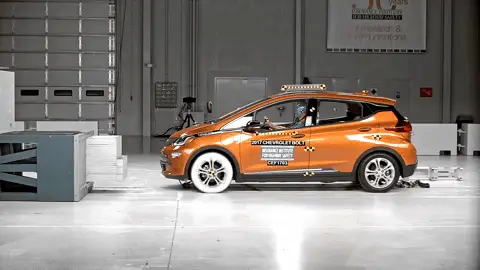
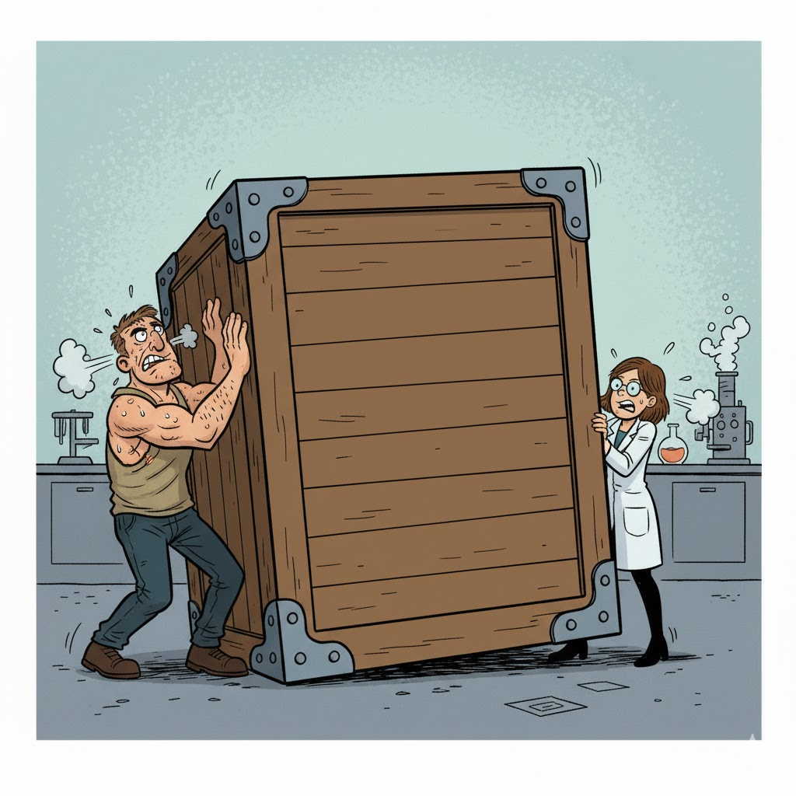
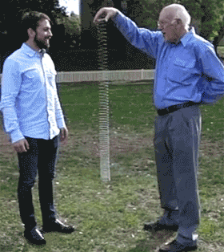
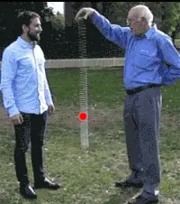
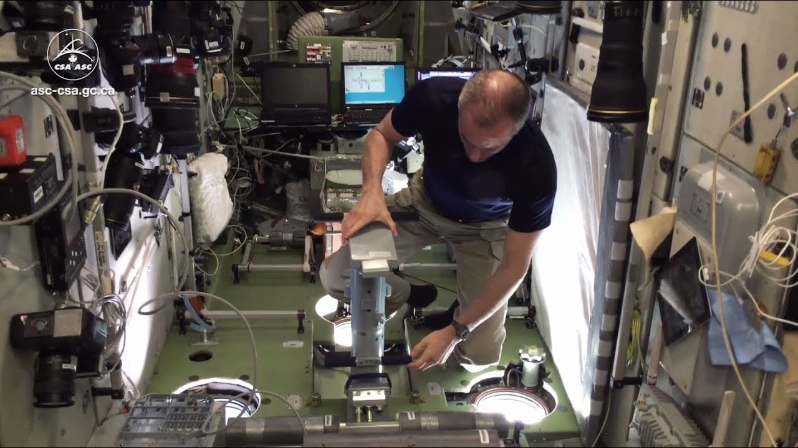

- È il tipo di moto che segue un oggetto che cade verticalmente
- La velocità aumenta, secondo dopo secondo, di 10 m/s (ossia 36
km/h):
- Se si parte da fermi, dopo 1 s si cade a 10 m/s
- Dopo un altro secondo, a 20 m/s
- Dopo un altro secondo, a 30 m/s…
- Il valore 10 m/s vale solo sulla Terra!
Fisica Applicata – Parte 2
Cinematica e dinamica
Davide Bianchi (davide.bianchi1@unimi.it)
(slides mutate dal corso di Maurizio Tomasi)
Argomenti di questa sezione
- Come misurare il moto dei corpi?
- Quali sono le cause che fanno muovere i corpi?
- Leggi di Newton
- Periodicità in natura
Come usare i grafici
Come usare i grafici
Nel mondo scientifico, si usano molto i grafici: essi consentono di rappresentare quantità numeriche altrimenti difficili da interpretare
Dovreste aver già visto nella scuola secondaria come si creano e si leggono i grafici
Facciamo però un esempio interattivo per rispolverare alcuni concetti importanti
Moto e forze
Abbiamo fatto sinora uno studio cinematico: la cinematica è la scienza che studia quantitativamente il moto dei corpi
Tre tipi di moti importanti nella cinematica sono i seguenti:
- Moto rettilineo uniforme: un corpo si muove in linea retta, sempre alla stessa velocità
- Moto rettilineo uniformemente accelerato
- Moto armonico
Sappiamo già tutto sul primo; vediamo ora brevemente gli altri due
Moto uniformemente accelerato

L’accelerazione
È la misura di quanto cambia la velocità col tempo: a = \frac{\Delta v}{\Delta t}
Nel caso della caduta di un corpo, ogni secondo (\Delta t = 1\,\text{s}) il corpo aumenta la sua velocità di \Delta v = 10\,\text{m/s}, quindi a = \frac{\Delta v}{\Delta t} = \frac{10\,\text{m/s}}{1\,\text{s}} = 10\,\text{m/s$^2$}.
Attenzione: “accelerazione” si scrive con una elle!
Caduta sulla Luna

Come già accennato, sulla Luna l’accelerazione di gravità è appena 1,6 m/s².
Questo significa che i corpi impiegano più tempo che sulla Terra per cadere.
| Tempo | Velocità (🌍) | Velocità (🌕) | Posizione (🌍) | Posizione (🌕) |
|---|---|---|---|---|
| 0 s | 0 m/s | 0 m/s | 0 m | 0 m |
| 1 s | 10 m/s | 1,6 m/s | 5 m | 0,8 m |
| 2 s | 20 m/s | 3,2 m/s | 20 m | 3,2 m |
| 3 s | 30 m/s | 4,8 m/s | 45 m | 7,2 m |
| 4 s | 40 m/s | 6,4 m/s | 80 m | 12,8 m |
- Capire la posizione non è semplice: occorre conoscere il calcolo integrale!
- Se g è l’accelerazione (10 m/s² oppure 1.6 m/s²), la formula è \text{Posizione} = \frac12 \times g \times t^2
Moto armonico
È il tipico moto “avanti e indietro” di un metronomo, un diapason o un’altalena
Molto importante per l’acustica, come vedremo

Dalla cinematica alla dinamica
Perché il moto?
Spostiamoci ora dalla cinematica alla dinamica, che studia il motivo per cui le cose si muovono
Nel corso della storia del pensiero umano, furono avanzate molte ipotesi per spiegare il moto. Alcuni esempi:
Secondo Aristotele, le cose del mondo “sublunare” sono fatte di un miscuglio dei “quattro elementi” (terra, aria, acqua, fuoco), e tendono ad avvicinarsi a sostanze di natura simile: sassi, piume, fumo, bolle d’aria…
Secondo Buridano (ripreso da Oresme e Cartesio), gli oggetti si trasferiscono una sostanza, detta “impeto” (per cartesio: “quantità di moto”), che li fa muovere
La dinamica Newtoniana
|

|
Principi di Newton
- Lo stato naturale (“imperturbato”) dei corpi è il moto rettilineo uniforme (incluso lo stato di quiete!)
- Un corpo sottoposto a forze si muove di moto accelerato (o decelerato), e l’accelerazione è proporzionale alla somma delle forze
- Se un corpo A esercita una forza sul corpo B, il corpo B esercita una forza uguale e contraria sul corpo A
(Molto importante impararli tutti e tre!)
Principi di Newton
- Lo stato naturale (“imperturbato”) dei corpi è il moto rettilineo uniforme (incluso lo stato di quiete!)
- Un corpo sottoposto a forze si muove di moto accelerato (o decelerato), e l’accelerazione è proporzionale alla somma delle forze
- Se un corpo A esercita una forza sul corpo B, il corpo B esercita una forza uguale e contraria sul corpo A
(Molto importante impararli tutti e tre!)
Primo principio
2001: a space odyssey (S. Kubrick, 1968)
Secondo principio
In quest’immagine (Little miss Sunshine, Dayton & Faris, 2006) il furgoncino si muove perché qualcuno lo spinge
La forza impressa causa un’accelerazione sul furgoncino, che partiva da fermo ma ha aumentato la sua velocità
Terzo principio

- La macchina si ferma (= cambia la sua velocità) perché il muro esercita una forza contro di essa
- Anche il muro si muove, perché si deforma
Terzo principio
Il terzo principio di Newton è detto anche “di azione e reazione”:
Se agisco con una forza su un corpo (“azione”)…
…anche il corpo reagisce con una forza su di me (“reazione”)
È il motivo per cui quando do un pugno al muro mi faccio male!
Discutiamo insieme
Perché se faccio rotolare una palla a terra, dopo un po’ si ferma?
Perché una piuma cade più lentamente di una palla da bowling? (Una volta data una risposta, guardate questo video)
Somma di forze
Il secondo principio dice che se più forze agiscono su uno stesso corpo, queste si sommano
Se quindi due forze agiscono in senso opposto e si bilanciano, l’accelerazione complessiva sarà nulla e il corpo non si sposta!

Statica
La “statica” è la parte della fisica che studia i corpi che stanno fermi
Per il secondo principio, i corpi che stanno fermi devono essere soggetti a forze che si annullano
Il caso di una mano che spinge il muro è un esempio di problema di statica
Un ingegnere edile deve essere esperto di statica!
Caduta di una molla (#1)
Lasciando penzolare una molla e facendola cadere, avviene un fenomeno interessante
La cima della molla cade verso terra con un’accelerazione maggiore di g = 10\,\mathrm{m/s^2}, ma il fondo della molla sembra stare sospeso a mezz’aria
Perché secondo voi capita questo?

Caduta di una molla (#2)
Il centro della molla cade seguendo la legge del moto rettilineo uniformemente accelerato
La cima della molla però ha due forze che la spingono in basso: la gravità e la forza elastica della molla
Anche il fondo della molla subisce le due forze (gravità ed elastica), ma sono di verso opposto e si bilanciano

L’inerzia
Il concetto di “inerzia”
Se vi lanciassero addosso una palla e doveste fermarla con la mano, preferireste che fosse da ping-pong o da bowling?
Se il vostro mezzo si ferma in mezzo alla strada e dovete spingerlo fuori dalla carreggiata, è meglio che sia una Fiat 500 o un tir a pieno carico?
Massa inerziale
La “massa” (si misura in chilogrammi, kg) è una quantità intrinseca dei corpi che dice quanto è difficile metterli in moto (o fermarli)
Maggiore è la massa, maggiore è la forza necessaria ad accelerarli
In effetti, la seconda legge di Newton dice che se la forza totale è F, un corpo di massa m subirà un’accelerazione a = \frac{F}{m}
Massa inerziale
a = \frac{F}{m}
- Se F è grande ma m è colossale, allora a sarà piccola. Esempio: un rimorchiatore attaccato ad una nave merci a pieno carico.
- Se F è piccola ma m è minuscola, allora a sarà grande. Esempio: soffiare su dei granelli di polvere.
Massa e peso
Nella vita quotidiana si tende a confondere la massa col peso.
Ma sono due concetti diversi: il primo è un’unità del SI, il secondo è la forza che fa cadere i corpi a terra. Quindi:
La massa produce resistenza all’azione delle forze anche per un corpo nello spazio vuoto (l’astronauta di 2001: odissea nello spazio)
Il peso invece è la forza che fa accelerare verso il suolo. Esso esiste solo sulla Terra o sui pianeti, e cambia il suo valore (sulla Luna il peso è minore).
Pesare gli astronauti?

How do astronauts weigh themselves in space? (Agenzia Spaziale Canadese)
Unità di misura
Se l’accelerazione si misura in m/s² e la massa in kg, allora \begin{split} a&= \frac{F}{m}\\ m \times a&= F \end{split} e quindi la forza F è il prodotto di m/s² e di kg
In onore di sir Isaac Newton, si definisce “Newton” la forza che accelera un corpo di 1 kg di 1 m/s²: 1\,\text{N} = 1\,\text{kg$\cdot$m/s$^2$}
Applicazione alla gravità
Bilanciamento di forze
- I pianeti viaggiano su orbite circolari anziché precipitare sul Sole perché posseggono inerzia, ossia la tendenza a viaggiare in linea retta
- Tutti i corpi posseggono inerzia, che è legata alla loro massa: più ne hanno, più è difficile deviarli
- Quando il Sistema Solare si è formato, i pianeti avevano una certa velocità iniziale: per questo non sono precipitati verso il Sole (e non precipiteranno!)
Orbite periodiche
Il Sistema Solare si è formato cinque miliardi di anni fa (“cinque giga-anni”!), e i pianeti hanno (quasi) sempre orbitato nelle orbite che osserviamo oggi
Questa stabilità è espressione di una quantità che viene conservata: l’energia:
- Un corpo in moto possiede una certa quantità di energia cinetica E_c, che misura la sua inerzia
- Un pianeta “sente” l’attrazione gravitazionale del Sole, che è quantificata dall’energia potenziale gravitazionale E_g
I pianeti orbitano per miliardi di anni perché nessuna delle due energie prevale sull’altra
Conclusioni
Cosa sapere per l’esame
- Cinematica: velocità, velocità media e velocità istantanea
- Dinamica di Newton; le tre leggi
- Inerzia, differenza tra massa e peso